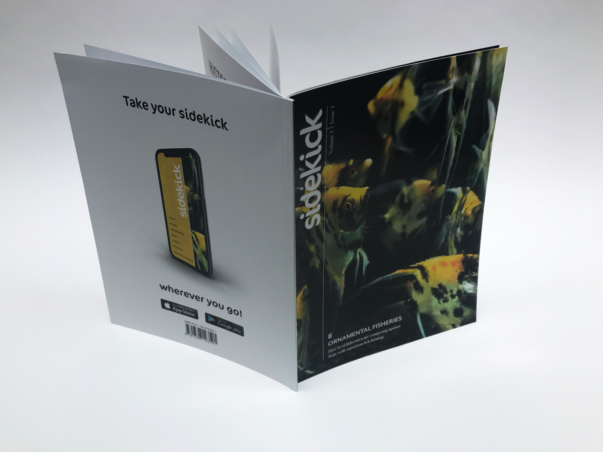

First is the contents page. Second is the first department of the magazine. It has three. This one is 'Heros'. This department finds animals who have done heroic things in the last month.


The next section of the magazine is the main article 'Ornamental Fisheries'. This article contrasts the commercial fisheries, that collect tons of fish, versus small fisheries, that sustain economies.


The final image is of the front and back covers.